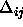

The default learning function for feed-forward nets is
Std_Backpropagation, you may want something a little more
extravagant. Simply click on (Select function next to the
learning parameters, see figure  ) and pick what you
want to use. The routines you may want to consider are
Std_Backpropagation, BackpropMomentum or Rprop). Use
BackpropMomentum for the letters example.
) and pick what you
want to use. The routines you may want to consider are
Std_Backpropagation, BackpropMomentum or Rprop). Use
BackpropMomentum for the letters example.
Each learning function requires a different parameter set: here are the important ones, details are given in the manual:
 learning rate (0-1), 2:
learning rate (0-1), 2:  , the maximum error that is tolerated. use 0 or a small
value.
, the maximum error that is tolerated. use 0 or a small
value.
 learning rate (0-1), 2:
learning rate (0-1), 2:  momentum term (0-0.99), 3: c flat spot elimination (ignore) and 4:
momentum term (0-0.99), 3: c flat spot elimination (ignore) and 4:
 max ignored error.
max ignored error.

(0-0.2) 2: maximum update value (30 works well..) 3:
maximum update value (30 works well..) 3:  the weight decay term as an exponent (5 works for most problems) .
the weight decay term as an exponent (5 works for most problems) .
Once all parameters are set you are ready to do some training.
Training is done for a number of 'CYCLES' or epochs (enter a number,
say 200 - see fig.  ). All training patterns are
presented once during each cycle. It is sometimes preferable to select
the patterns randomly for presentation rather than in order: Click on
to do this.
). All training patterns are
presented once during each cycle. It is sometimes preferable to select
the patterns randomly for presentation rather than in order: Click on
to do this.
For the pattern associator example leave the learning rate at 0.2 and set the momentum term (second field) to 0.5; leave everything else at 0.
Before starting the learning process you may like to open a GRAPH panel
(from ) to monitor the progress during training.
Click on to start training and  to interrupt training at
any time. The graph will start on the left whenever the network is
initialised so that it is easy to compare different learning
parameters. The current errors are also displayed on the screen so
that they could be used in any graph plotting package (like xmgr).
to interrupt training at
any time. The graph will start on the left whenever the network is
initialised so that it is easy to compare different learning
parameters. The current errors are also displayed on the screen so
that they could be used in any graph plotting package (like xmgr).
It is impossible to judge the network performance from the training data alone. It is therefore sensible to load in a 'test' set once in a while to ensure that the net is not over-training and generalising correctly. There is no test set for the letters example. You can have up to 5 different data sets active at any one time. The two buttons on the control panel allow you to select which data sets to use for training and validation. The top button selects the training set, the bottom one the 'validation set'. If you enter a non-zero value into the box next to a validation data set will be tested and the root-mean-square error will be plotted on the graph in red every N cycles (N is the number you entered in the box).
You can also step through all the patterns in a data set and, without
updating any weight, calculate the output activations. To step through
the patterns click on  .
.
You can go to any pattern in the training data set by either specifying the pattern number in the field next to 'PATTERN' and clicking on or by using the 'tape player controls' positioned to the right of . The outputs given by the network when stepping though the data are the targets, not the calculated outputs (!).